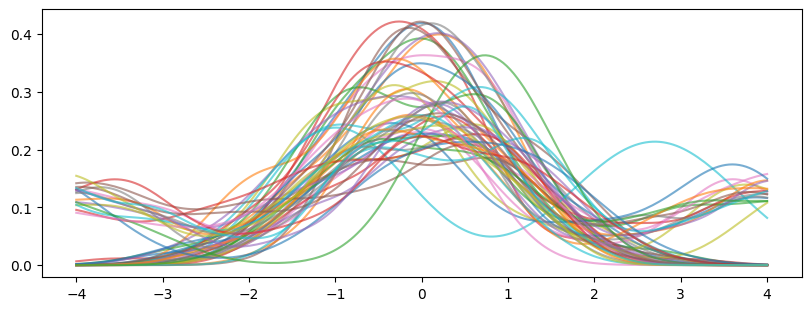
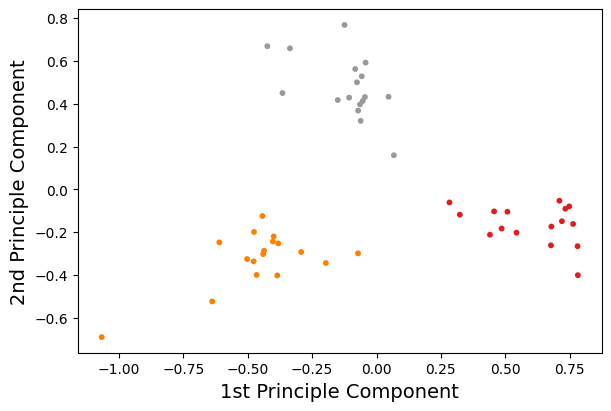

Dimension Reduction
Dimension reduction has a close relation to feature engineering. Before performing the clustering, we wish to keep the main features of data instead of dumping the whole raw data into the clustering models.
import pandas as pd
pd.set_option("display.max_rows", 10)
Data Preparation
When we have the raw data of discrete particle velocities at a given location, we first need to convert that into a distribution function. Here we take advantage of the Kernel Density Estimation (KDE) technique implemented in scikit-learn. Note that an alternative implementation exists in seaborn but for plotting purposes.
from sklearn.neighbors import KernelDensity
import numpy as np
import matplotlib.pyplot as plt
from vdfpy.generator import make_clusters
df = make_clusters(n_clusters=3, n_dims=1, n_points=100, n_samples=50, random_state=1)
df
| class | particle velocity | density | bulk velocity | temperature | |
|---|---|---|---|---|---|
| 0 | 1 | vx 0 -1.889013 1 -0.174772 2 -0.4... | 47.0 | -0.095871 | 0.864831 |
| 1 | 1 | vx 0 -0.810815 1 0.752244 2 0.2... | 51.0 | -0.083029 | 0.928393 |
| 2 | 1 | vx 0 0.616879 1 2.547898 2 -1.0... | 75.0 | -0.073963 | 0.989770 |
| 3 | 1 | vx 0 0.548405 1 -1.065125 2 1.8... | 95.0 | -0.201632 | 0.909026 |
| 4 | 1 | vx 0 0.782085 1 0.134622 2 0.26290... | 4.0 | 0.099152 | 0.564061 |
| ... | ... | ... | ... | ... | ... |
| 45 | 3 | vx 0 -0.965805 1 -1.218734 2 0.5... | 73.0 | -1.205324 | 1.962643 |
| 46 | 3 | vx 0 0.528009 1 0.129235 2 -0.7... | 18.0 | -1.582758 | 1.908900 |
| 47 | 3 | vx 0 1.391988 1 -0.746404 2 ... | 147.0 | -1.354992 | 2.117926 |
| 48 | 3 | vx 0 -0.305792 1 -1.474984 2 ... | 112.0 | -1.399677 | 1.998004 |
| 49 | 3 | vx 0 -0.276332 1 0.977128 2 ... | 144.0 | -1.301792 | 2.110255 |
50 rows × 5 columns
n_features = 200
X_plot = np.linspace(-4, 4, n_features)[:, np.newaxis]
density = np.zeros(shape=(df["particle velocity"].size, n_features))
for isample, pv in enumerate(df["particle velocity"]):
kde = KernelDensity(bandwidth="silverman").fit(pv.values)
log_den = kde.score_samples(X_plot)
density[isample,:] = np.exp(log_den)
fig, ax = plt.subplots(1, 1, figsize=(8, 3), layout="constrained")
ax.plot(X_plot[:, 0], np.transpose(density), alpha=0.6)
plt.show()

from sklearn.decomposition import PCA
n_components = 2
pca = PCA(n_components=n_components)
pca.fit(density)
X = pca.transform(density)
fig, ax = plt.subplots(1, 1, figsize=(6, 4), layout="constrained")
ax.scatter(X[:,0], X[:,1], s=10, c=df["class"], cmap="Set1")
ax.set_xlabel("1st Principle Component", fontsize=14)
ax.set_ylabel("2nd Principle Component", fontsize=14)
plt.show()

import umap
reducer = umap.UMAP(n_components=2)
X = reducer.fit_transform(density)
fig, ax = plt.subplots(1, 1, figsize=(6, 4), layout="constrained")
ax.scatter(X[:,0], X[:,1], s=10, c=df["class"], cmap="Set1")
xax = ax.axes.get_xaxis()
xax.set_visible(False)
yax = ax.axes.get_yaxis()
yax.set_visible(False)
plt.title("UMAP projection", fontsize=16)
plt.show()
/home/runner/.cache/pypoetry/virtualenvs/vdfpy-djU7PhlF-py3.11/lib/python3.11/site-packages/sklearn/utils/deprecation.py:151: FutureWarning: 'force_all_finite' was renamed to 'ensure_all_finite' in 1.6 and will be removed in 1.8.
warnings.warn(
Note that umap has its own plotting support with some extra dependencies.